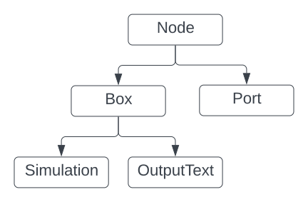
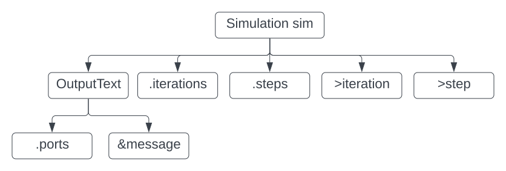
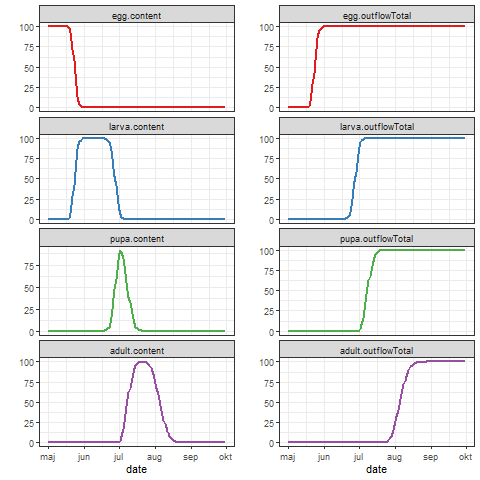

Ecological Modelling Laboratory
Welcome to the lab
Welcome to the lab
xxx
xxx
Universal Simulator comes as an installation package. Just download Universal Simulator and afterwards launch the downloaded installation package. It is currently a Windows-only software. Hail me with some encouragement, and I will find time to build a Mac or Linux installation package too.
You will also need R software, either stay with the classic R or put R Studio on top of it.
You've already got a pre-installed text editor on your computer. Free and not very useful. On Windows, that means Notepad. Improve on that and download Notepad++, right away. If you are an experienced power user, you can just keep using your favourite text editor.
If you are an experienced programmer, you may want to download the Universal Simulator source code and the Qt Creator development environment. You can find the details in the BoxScript Developer section.
xxx
BoxScript is not a language designed to put text messages on to your screen. Anyway: No programming language without a Hello world! example. Here goes
// hello_world1.box
Simulation sim {
.steps = 3
OutputText {
&message = "Hello world!"
.ports = .[message]
}
}Start up Universal Simulator and type at its prompt:
> run demo/hello_world1.boxAfter it has successfully completed (we expect nothing but success of this exercise), follow up with this command:
> headThe only surprise you will get is that you will see the happy message four, not three, times. Take it easy. That will be explained in due time:
message iteration step
Hello world! 1 0
Hello world! 1 1
Hello world! 1 2
Hello world! 1 3The output consists of three columns, two more than the message we asked for. Consider the output of this slightly extended boxscript:
// hello_world2.box
Simulation sim {
.iterations = 2
.steps = 3
OutputText {
&message = "Hello world!"
.ports = .[message]
}
}The output has now been doubled in length. You'll see two iterations producing four lines each:
message iteration step
Hello world! 1 0
Hello world! 1 1
Hello world! 1 2
Hello world! 1 3
Hello world! 2 0
Hello world! 2 1
Hello world! 2 2
Hello world! 2 3If you just write head then you will only see the first 6 lines of the output (mimicking the R head function). To see up to, say, 10 lines, you write
> head 10The iteration column counts the iterations starting from 1, while the step column counts the steps within each iteration starting from 0. These two loops, steps within
iterations, are central to the computational model of Universal Simulator.
xxx
While we achieved a quick response from our efforts at the prompt above, it is not very useful for simulation outputs that spans hundreds (or millions, there are no hard-coded limits) of lines. To process larger outputs we make use of R:
// hello_world3.box
Simulation sim {
.iterations = 5
.steps = 100
OutputR {
OutputText {
&message = "Hello R!"
.ports = .[message]
}
}
}Among the status messages reported by Universal Simulator you will see
...
Executable R snippet copied to clipboard!
...So, switch to R and paste the clipboard at the R prompt. There you will get this message reported by R:
Simulation output available in data frame 'sim' with 505 rows and 3 columnsIf you inspect the sim data frame you will find the expected outputs. Look into Running simulations for a demonstration of how simulation outputs can be shown in R plots, or continue your reading here to learn more about the data structures behind the boxscripts.
xxx
A boxscript arranges objects in the well-known composite pattern (GoF 1995). For this to work, all objects need to be of a class derived from a common base class. In the BoxScript framework the common base class is Node:

Box and Port are classes derived from Node. You can use Box directly in a boxscript as a simple container for other nodes but, more importantly, it serves as a base class for classes with various behaviours, such as Simulation and OutputText. You can use this command to see all the standard classes derived from Box:
> help boxesPort is a class that allows information to flow in and out of boxes.
xxx
Object-oriented design invites the use of natural language for very specific meanings. Thus we will use 'node' to mean a Node object, 'box' to mean a Box object and 'port' to mean a Port object. Plural forms mean many such objects, e.g., 'boxes' mean some number of Box objects.
In the hello_world2.box⏷ script above, we created one Simulation box called sim and one OutputText box, which we left unnamed. We consider the latter the child of the former, its parent. They are both parts of this object diagram:

The diagram shows five children of the sim box and two children of the OutputText box. There are three types of ports:
These different types of ports were not implemented as classes derived from Port. There is instead a type field in the Port class defining the type of the specific port. While the basic Box class comes with no ports defined, derived classes will usually be equipped with input ports to supply whatever parameters and variables are needed for their functionality. Note that BoxScript does not discern between fixed inputs (in other languages called parameters, constants or settings) and variable inputs (variables). They are all just considered inputs.
Output ports (marked by an ''>'' above), on the other hand, provide access to the state of the box. You won't find all the output ports of all boxes in the boxscript represented as a column in the simulation output. Rather, you tell the OutputText box (or any other box providing output, e.g. for R plots) which ports you want included (through its ports input port; well, maybe I should have chosen another name for that one). However, the iteration and step outputs of the Simulator box are obligatory in the output, which is how we ended up with three columns in the output above.
You can use the help command together with a class name to see the input and output ports belonging to a class:
> help Simulationhelp will list the ports together with their type, their default value (inputs only), their unit (in brackets, may be unitless) and description. If the port defaults to an expression, the expression will be shown.
If you want to change the default value of an input port, you precede its name by a period and write its value, as seen in the hello_world2.box⏷ script:
Simulation sim {
.steps = 3
}
The right-hand side may be a constant as above or a more complicated expression. Most importantly, you can refer to the value of another port providing a path to it:
OutputText {
&message = "Hello world!"
.ports = .[message]
}
The code above also exemplifies how to create an auxiliary port. You can equip any box with auxiliary ports of your own choice by preceding the port name with an ampersand &.
Shortly on paths: The port name is always written in brackets. If several ports happen to be on the path, you will get a vector of values. The value(s) found on the path will be converted to the type of the receiving input port as needed. Incompatible port types will result in a runtime error. The full description of paths and port types is not overly complicated.
xxx
The complete boxscript describes a model but often a single class or an object in itself defines a model. The DayDegrees class, for example, defines a simple model of physiological development. So, does a concrete object of that class. Thus we may refer to a boxscript, a class or an object as a model. On the other hand, it would be confusing to call the Calendar class a model, since it only role is to keep track of time.
xxx
First time you run Universal Simulator (or whenever you have installed a new version and the first time you run that), it will give birth to a new folder UniversalSimulatorHome inside your home folder. The home folder is easily found on a Mac or in Linux but is well hidden on Windows (where it seemingly doesn't feel right at home). On Windows you will find it inside C:\users\your_name.
You are told as much in the Welcome that greets you whenever you start Universal Simulator, here on a Windows computer:
Work folder:
absolute path 'C:/Users/your_name/UniversalSimulatorHome'
Input folder:
relative path 'input' resolves to 'C:/Users/your_name/UniversalSimulatorHome/input'
Output folder:
absolute path 'C:/Users/your_name/Documents/QDev/UniSim2/output'
You can also retrieve this information with the get folders command:
> get foldersFor a start, UniversalSimulatorHome is set as your work folder. Inside the work folder, you've always got two sub-folders, the input folder and the output folder, aptly named input and output by default.
The UniversalSimulatorHome/input folder will be filled with all the example boxscripts found on this site and referred to in any publications that used Universal Simulator. You will find them in the input/demo and input/papers folders, respectively.
xxx
It is recommended that you create your own work folder for your models. Create a folder, maybe as a sub-folder of your Documents folder. You can call it, for instance, BoxModels. Inside that create a folder called input. You've now got these two empty folders:
Next, you need to tell Universal Simulator that BoxModels is your work folder. First, find the absolute path to your work folder. On Windows, use File Explorer: Right-click the BoxModels folder, choose Properties on the pop-up menu, select and copy the Location path. Paste this path as an argument to the set folder work command:
> set folder work C:/Users/your_name/Documents/BoxModelsWork folder: absolute path 'C:/Users/your_name/Documents/BoxModels' Input folder: relative path 'input' resolves to 'C:/Users/your_name/Documents/BoxModels/input' Output folder: relative path 'output' resolves to 'C:/Users/your_name/Documents/BoxModels/output'
Now, you are ready to keep your own boxscripts in the BoxModels folder. Create sub-folders inside BoxModels to organize your boxscripts as you wish.
If you need to revert to the default work folder (maybe to find the demo boxscripts more easily), use HOME as a magic folder name:
> set folder work HOMEWork folder: absolute path 'C:/Users/your_name/UniversalSimulatorHome' Input folder: relative path 'input' resolves to 'C:/Users/your_name/UniversalSimulatorHome/input' Output folder: absolute path 'C:/Users/your_name/Documents/QDev/UniSim2/output'
xxx
xxx
You load a boxscript like this
> load demo/butterfly1.boxConstructing... Amending... 17 boxes created
In response to reading the boxscript, Universal Simulator will construct and amend all the boxes needed to run the boxscript. In this case 17 boxes were created. The difference between constructing and amending only becomes important, once you get to the advanced stage of developing your own boxes in C++ (as Box-derived classes).
If you'd rather not type out the full path to the boxscript, you simple type <Ctrl+space bar>:
> load <Ctrl+space bar>This will bring up a file picker, which will allow you to point and click all the way to the wanted boxscript. The file picker will start out in the same folder as the latest boxscript that you loaded.
When a boxscript has been loaded successfully (any lack of success will be obvious from error messages), you have in effect loaded a model, ready to be run. You can only have one model loaded at a time. If you load another model (i.e. if you load another boxscript), it will replace the current model.
xxx
When you run a model, it means you carry out a simulation as defined by the model. You can run the current model (i.e. the one defined by your latest loaded boxscript) like this
> runConstructing... Amending... 17 boxes created Initializing... Resetting... Updating... Cleaning up... Debriefing... R script written to 'C:/Users/your_name/UniversalSimulatorHome/output/butterfly1_0010.R' Executable R snippet copied to clipboard Data frame written to 'C:/Users/your_name/UniversalSimulatorHome/output/butterfly1_0010.txt' Finished after 266 msecs in step 152/152
From the output you can see that a run actually always carries out an initial load (the 17 boxes were created anew). This means that if you are in a hurry you can run a specific model directly:
> run demo/butterfly1.boxThe simulation goes through specific stages, which reflect the logic of how box behaviour is defined in C++. Finally, you get a report of the three specific outputs produced by the simulation:
Two files are written to the output folder. Every time you run a simulation, an additional two files will be written there. You should empty the output folder now and then to get rid of all these files.
The R snippet (a 'code snippet' is a few lines of code) in the clipboard is meant to be pasted directly at the R prompt. As you deftly switch (by <Alt+Tab> or <Command+Tab>) from the Universal Simulator prompt to the R prompt, where you paste (by<Ctrl+V> or <Command+V>), you are rewarded immediately by plots showing the simulation results:

As you might have guessed, the R snippet makes clever use of the two output files to create the plots defined in the boxscript: The text file is read and ends up in an R data frame called sim. This data frame contains that data needed to produce the plots.
After celebrating your success, you can switch back to the Universal Simulator prompt to run an other simulation.
xxx
To have a look at the current boxscript simply type
editThis will show the boxscript code in the editor set up to edit boxscripts. First time off, no editor has been set up, so your operating system (Windows/OS X/Linux) will prompt you to choose an editor for this purpose. Any pure text editor will work (e.g., on Windows Notepad, or even better, Notepad++ but do not choose a word processor. Here, is the BoxScript code that you will see for the butterfly1.box⏷ script:
// butterfly1.box
Simulation sim {
Calendar calendar {
.begin = 01/05/2009
.end = 30/09/2009
}
Records weather {
.fileName = "weather/flakkebjerg 2009.txt"
}
Box butterfly {
Stage egg {
.initial = 100
.duration = 140
.timeStep = ./time[step]
DayDegrees time {
.T0 = 5
.T = weather[Tavg]
}
}
Stage larva {
.inflow = ../egg[outflow]
.duration = 200
.timeStep = ./time[step]
DayDegrees time {
.T0 = 8
.T = weather[Tavg]
}
}
Stage pupa {
.inflow = ../larva[outflow]
.duration = 100
.timeStep = ./time[step]
DayDegrees time {
.T0 = 10
.T = weather[Tavg]
}
}
Stage adult {
.inflow = ../pupa[outflow]
.duration = 28
.timeStep = 1
}
}
OutputR {
PageR {
.xAxis = calendar[date]
.ncol = 2
PlotR {
.ports = *[content]
.ggplot = "scale_x_datetime(
breaks = date_breaks('months'),
labels = date_format('%b')
)"
}
PlotR {
.ports = *[outflowTotal]
.ggplot = "scale_x_datetime(
breaks = date_breaks('months'),
labels = date_format('%b')
)"
}
}
}
}Fell free to change the code, save the file, and run the script again to see what change it made to the simulation output. Or, on second thought, save your changed boxscript under another name and then run that boxscript.
xxx
The list command is a powerful tool to inspect the structure and state of your currently loaded model. The structure will remain unaltered after you have loaded the boxscript but the state will have changed after you have run a simulation.
First you can simply list all the boxes which together constitute the model:
> listSimulation sim Calendar calendar Records weather Box butterfly Stage egg DayDegrees time Stage larva DayDegrees time Stage pupa DayDegrees time Stage adult OutputR PageR PlotR PlotR OutputWriter outputWriter OutputSelector selector
The hierarchy of boxes is shown by identation. Each box is designated by its class (e.g. Records) and its name (e.g. weather), unless it is nameless (e.g. the PlotR boxes). Class names must correspond to a name defined in the Universal Simulator toolbox, while box names can be chosen freely albeit according to custom, they should start with a lowercase letter (telling those in the know that they are actually object names).
You can list a particular box and all its descendents by giving its name followed by the r option, which stands for recurse:
> list butterfly rBox butterfly Stage egg DayDegrees time Stage larva DayDegrees time Stage pupa DayDegrees time Stage adult
To inspect the ports, you add the p option:
> list calendar pCalendar calendar .latitude = 52.0 [-90,90] .longitude = 11.0 [-180,180] .timeZone = 1 h .begin = 2009/05/01T00:00:00 DateTime .end = 2009/09/30T00:00:00 DateTime .timeStep = 1 int>0 .timeUnit = "d" y|d|h|m|s >steps = 0 >date = d/m/y >time = h:m:s >dateTime = T d/m/y h:m:s >timeStepSecs = 0.0 s >timeStepDays = 0.0 d >totalTimeSteps = 0 int >totalTime = 0 int >totalDays = 0.0 d >dayOfYear = 0 [1;366]
Here, the input ports are preceded by a period . and the output ports by a >. For each port you see its current value, often follow by its type or an indication of its legal values. The command above was issued just after loading the butterfly1.box⏷ script. That's why the output ports carry their initial values, and the date, time and dateTime ports even appear empty (because their values are yet undefined). If we run the model and repeat the command, we get
> list calendar pCalendar calendar .latitude = 52.0 [-90,90] const .longitude = 11.0 [-180,180] const .timeZone = 1 h const .begin = 2009/05/01T00:00:00 DateTime const .end = 2009/09/30T00:00:00 DateTime const .timeStep = 1 int>0 const .timeUnit = "d" y|d|h|m|s const >steps = 152 >date = 2009/09/30 d/m/y >time = 00:00:00 h:m:s >dateTime = 2009/09/30T00:00:00 d/m/y h:m:s >timeStepSecs = 86400.0 s >timeStepDays = 1.0 d >totalTimeSteps = 152 int >totalTime = 152 int >totalDays = 152.0 d >dayOfYear = 273 [1;366]
The output ports have now been updated and maintain their final values in the simulation. You will also note that all the inputs have been marked const. That's because they have been identified as being constant throughtout the simulation. This speeds up the execution. We can find examples of inputs that are not constant in one of the DayDegrees boxes:
> list butterfly/egg/time pDayDegrees time .T = 10.5 <- sim/weather[Tavg] .timeStepDays = 1.0 <- sim/calendar[timeStepDays] .resetTotal = FALSE const .isTicking = TRUE const .T0 = 5.0 const .Topt = 100.0 const .Tmax = 100.0 const >step = 5.5 PTU >total = 1605.7 PTU
First of all, you can see how to specify the path two a specific box butterfly/egg/time. Here you can read more about paths.
The two non-constant input ports are T and timeStepDays. You can see from which output ports they fetch their inputs and you can see their current (final, if we just ran the model) values. This was set up in the boxscript like this
Stage egg {
.initial = 100
.duration = 140
.timeStep = ./time[step]
DayDegrees time {
.T0 = 5
.T = weather[Tavg]
}
}Note: If timeStep is followed all the way back to its source, it turns out to remain constant during the simulation since it ultimately relies only on inputs that are all constant. Currently, Universal Simulator marks as constant only those ports that are immediately constant. More intelligent resolution of constants can be expected in future versions (to speed up the execution even more).
The options can be combined. Here are a few combinations (output not shown):
> list butterfly/egg pr...> list sim pr...
Maybe after that, it will be nice to know that clear command clears the prompt dialog. It's so often called for that the <Ctrl+L> shortcut achieves the same. Bonus info: <Ctrl+L> also works on the R prompt. And, at the Linux prompt (but if you use Linux, you already knew that).
In the reference manual, you can find are even more options for the list command.
xxx
When you paste the clipboard at the R prompt, a snippet of pre-cooked R code is executed corresponding to your boxscript. However, you can also define you own R script (or R scripts) to be carried out. Here is an example of a boxscript, which does not carry out a proper simulation but rather demonstrates the curve shapes produced by to kinds of boxes, DayDegrees and Briere:
// briere1.box
Simulation sim {
.steps = temperature[steps]
SequenceByStep temperature {
.min = 12
.max = 37
.by = 0.2
}
DayDegrees dayDegrees {
.timeStepDays = 1
.T0 = 14.2
.Topt = 29
.Tmax = 35
.T = temperature[value]
}
Briere briere {
.timeStepDays = 1
.T0 = 14.2
.Tmax = 35
.a = 2.836e-5
.T = temperature[value]
}
OutputR {
.scripts = "briere1.R"
OutputText {
.ports = temperature[value] | dayDegrees[step] | briere[step]
}
}
}The output is stated as an OutputText, which simple produced an output text file. You specify the R script(s)—supposedly to work on that output but, in fact the R script(s) could do anything)—in scripts port of the OutputR box. This port takes a vector of strings, so you could also write:
.scripts = c("briere1.R", "briere2.R", "briere3.R")The R scripts can be placed in the same folder as the boxscript, or you can put them in a folder, which you can refer to by paths relative to the folder of the boxscript, for example:
.scripts = c("general/setup.R", "analysis/briere.R", "figures/briere3.R")
The R scripts will be carried out (in the given order) when you paste the clipboard at the R prompt after having run your boxscript.
Before your R scripts, another R script has been executed providing you with useful hooks to the output produced by your script. This script is the begin.R⏷ script, which is one of the standard scripts residing in the inputs/scripts folder of the Universal Simulator home folder. It sets up the following variables:
red, blue, green, violet, orange, brown, pink, grey. These colours can be used individually but they have also been set up to replace the default colour scales of ggplot.sim with all outputs from the boxscript.iterationColumn) and step counter (stepColumn).box_script_folder).output_file_name), i.e. the text file read into the sim data frame. In addition, you will have access to these functions:
ggplot_theme(font_size) returns a ggplot theme adjusted to the given font_size.output_file_folder() returns the absolute path to the output folder, i.e. the path part of output_file_name.output_file_base_name() returns the base file name of the output folder, i.e. the base file name part of output_file_name. The base file name is the file name without the suffix, in this case with out the .txt suffix.open_plot_window(width=7, height=7) opens a pop-up window to show you plot. It uses different methods to create the windows depending on the platform (Mac, Windows or Linux).Here is the full briere1.R⏷ script referred to in the boxscript above. It demonstrates how to compare boxscript outputs with observations:
# briere1.R
sim = sim[1:3]
colnames(sim) = c("Temperature", "DayDegrees", "Briere")
sim$DayDegrees = sim$DayDegrees/472.1
obs = data.frame(
Temperature = c(15,17,20,25,27,30,33,35),
L = c(Inf,
121.5,
(83.68+78.46)/2,
(47.97+41.32)/2,
(38.92+34.42)/2,
(35.05+32.41)/2,
(38.33+37)/2,
Inf)
)
obs$DevRate = 1/obs$L
model = lm(DevRate~Temperature, data=obs[1:5,])
icept = coef(model)[1]
slope = coef(model)[2]
T0 = -icept/slope
duration = 1/slope
open_plot_window(6,3.5)
M = melt(sim, id.vars="Temperature", value.name="DevRate", variable.name="Model")
P = ggplot(M, aes(x=Temperature, y=DevRate, colour=Model)) +
geom_abline(intercept=icept, slope=slope, colour=brown, size=3, alpha=0.6) +
geom_line(size=1) +
geom_point(data=obs, colour=red, size=3) +
geom_vline(xintercept=T0) +
geom_hline(yintercept=0) +
scale_color_manual(values=c(green,blue)) +
scale_x_continuous(breaks=c(T0,20,25,30,35), labels=c(round(T0,1), 20,25,30,35)) +
labs(x="Temperature (oC)", y="1/L (per day)")
print(P)Here is the resulting plot:

Download the latest version of Universal Simulator with the freshly updated Virtual Greenhouse model.
2 May 2024
Read our paper on the Cereal Aphid-Fungus model and study the detailed documentation. Any questions? Write us.
2 Aug 2023
We remain candy-coloured until further notice.
1 Aug 2023
Any questions concerning our models and tools? Interested in visiting the lab? Want to chat online? Write us.